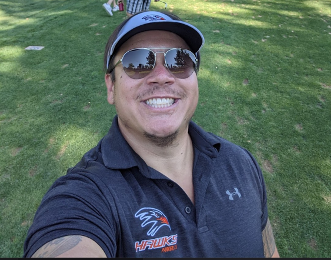

About Me
I’m a United States Air Force veteran and former software engineer who found his passion in coaching youth football. Over the years, I’ve made it my mission to help kids succeed on and off the field by giving them a structured, supportive environment where they can learn, grow, and compete with confidence.
As of now, the focus of this site is to provide a valuable resource for coaches, parents, and players who are looking for specific drills to improve their skills in different positions. I have curated a collection of resources and information gathered through my research to help you become a better coach or player.
Please note that while the website currently specializes in position drills, my vision is to expand its scope in the future and include more resources and content to support overall coaching development. Stay tuned for updates and additions as the site continues to grow.
I take coaching personally. I view the success of each kid as their own, but I carry their failures as my responsibility. That’s why I’m obsessed with improving, learning, and getting better. I spend a lot of time studying football, watching film, reading, and talking with other coaches. I’m always looking for ways to teach more clearly, structure practices better, and build stronger teams.
Thank you for visiting, and I hope you find the drills and resources here helpful in your coaching journey.